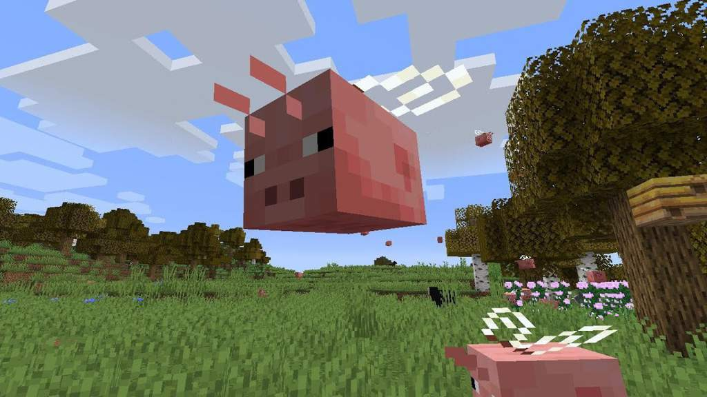
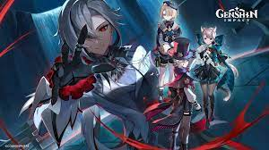
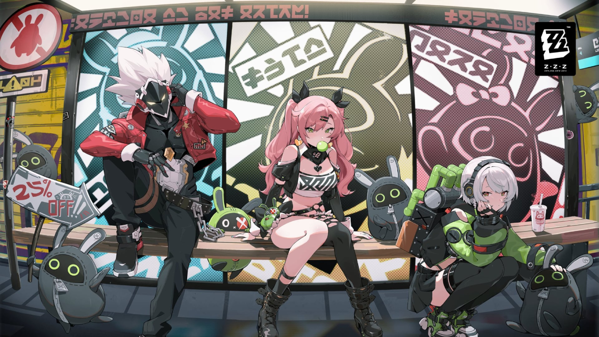
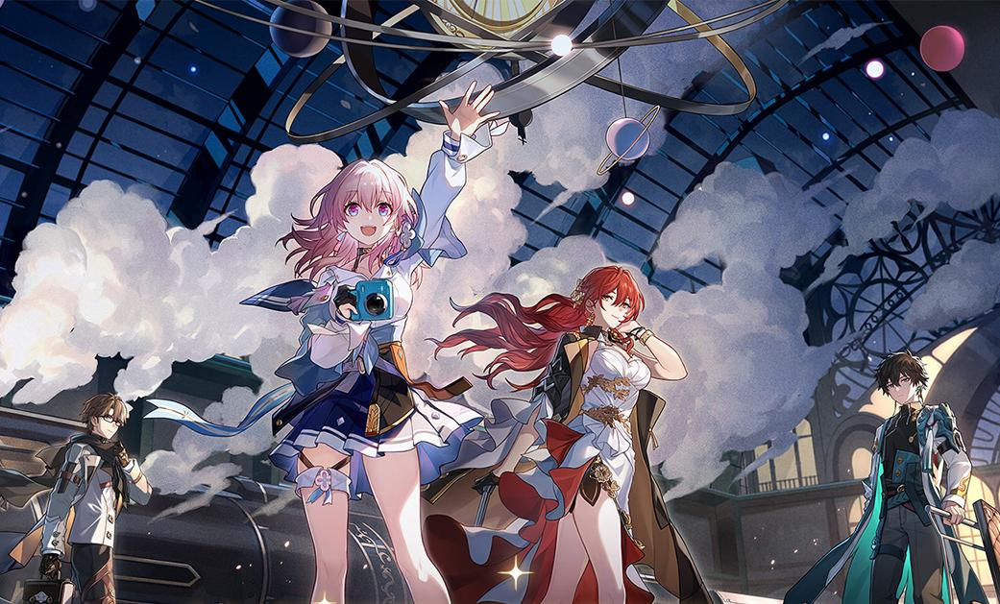
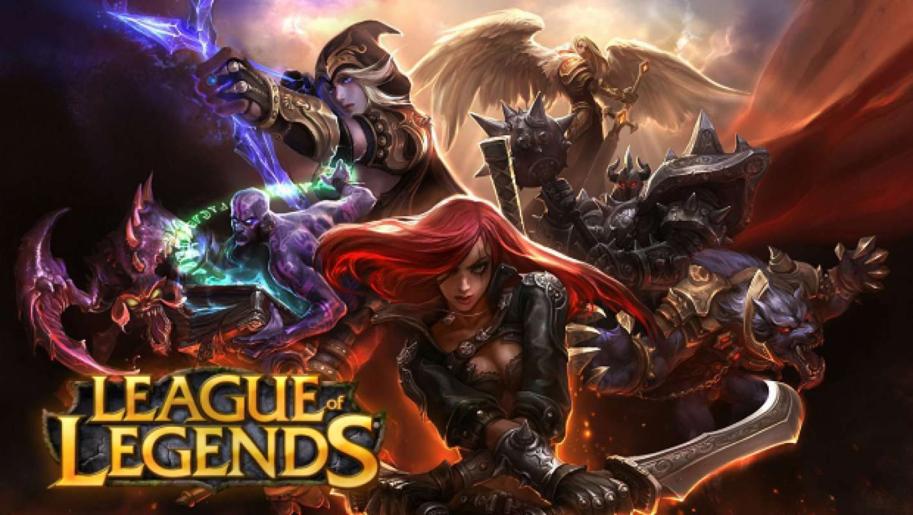

Любимые игры моего попугая
На ПК существует множество увлекательных и популярных игр, которые могут стать любимыми для многих геймеров. Первой игрой, которая часто становится любимой, является популярная многопользовательская игра в жанре "шутера" с элементами стратегии. Но не менее популярными являются игры в жанре "RPG" (ролевые игры), где игроку предоставляется уникальная возможность окунуться в фантастическую вселенную. Также не стоит забывать об играх с открытым миром, где игроку предоставляется свобода действий и исследования. В последнее время стали популярны игры-головоломки, требующие логического мышления и находчивости от игрока.
  Genshin impact
28 сентября 2020г. Zenles Zone Zero
4 июля 2024г
Among Us
15 июня 2018г Honkai Star Rail
26 апреля 2023г League of Legends
27 октября 2009гGTA
17 сентября 2013г